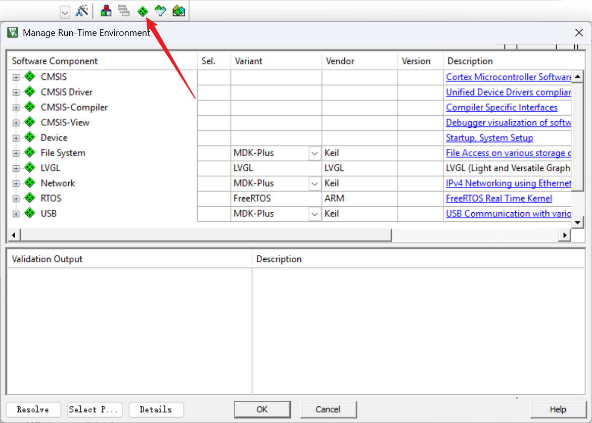
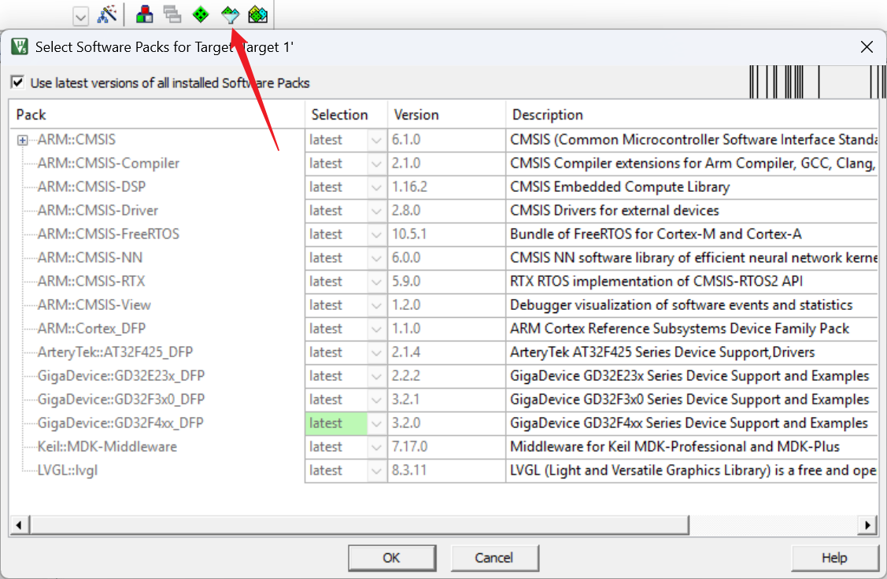
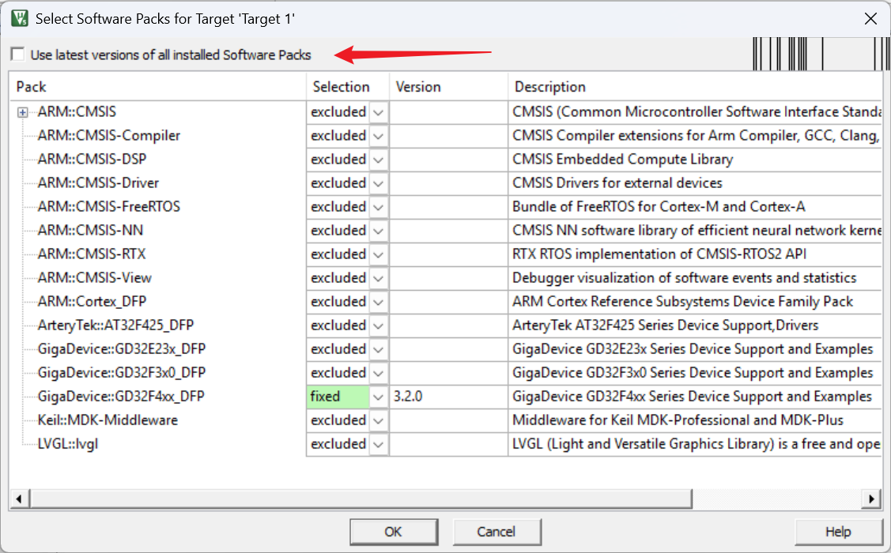
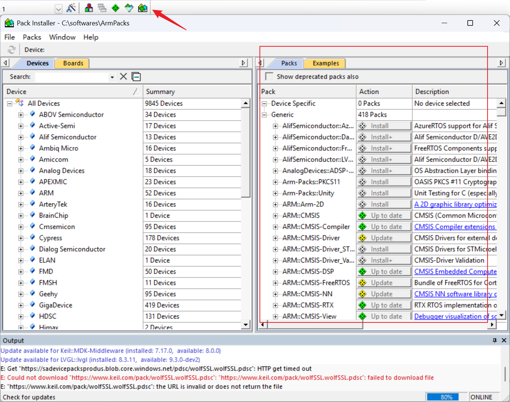
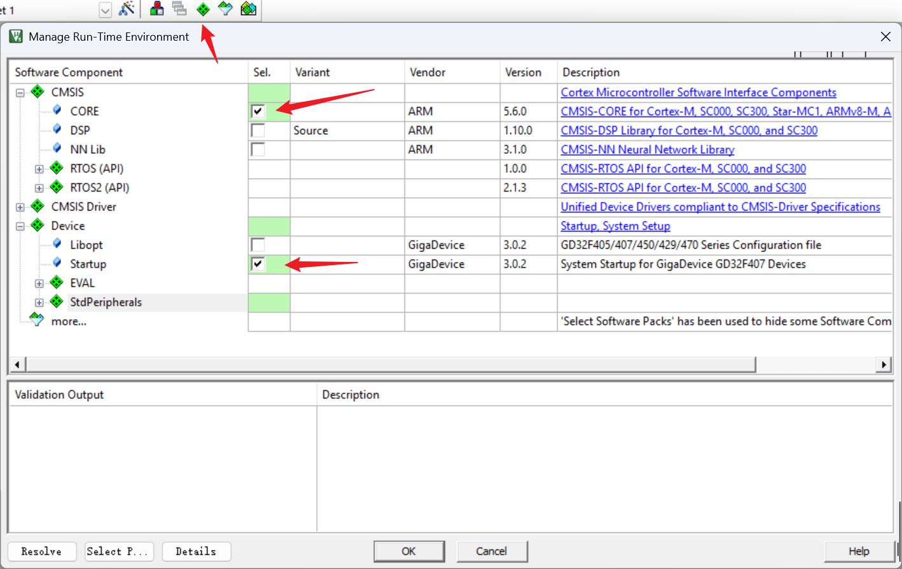
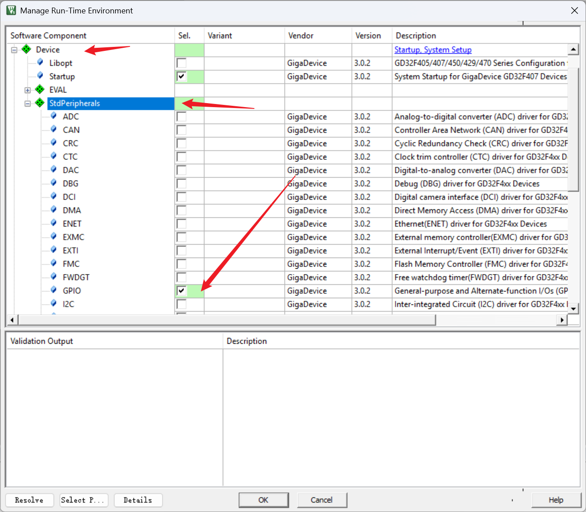
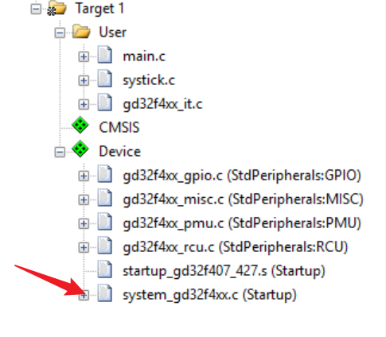
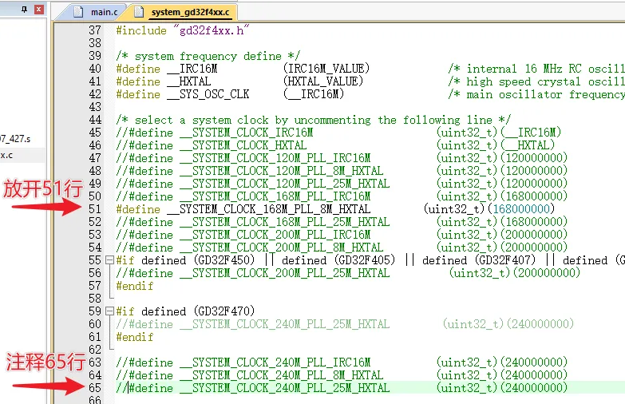
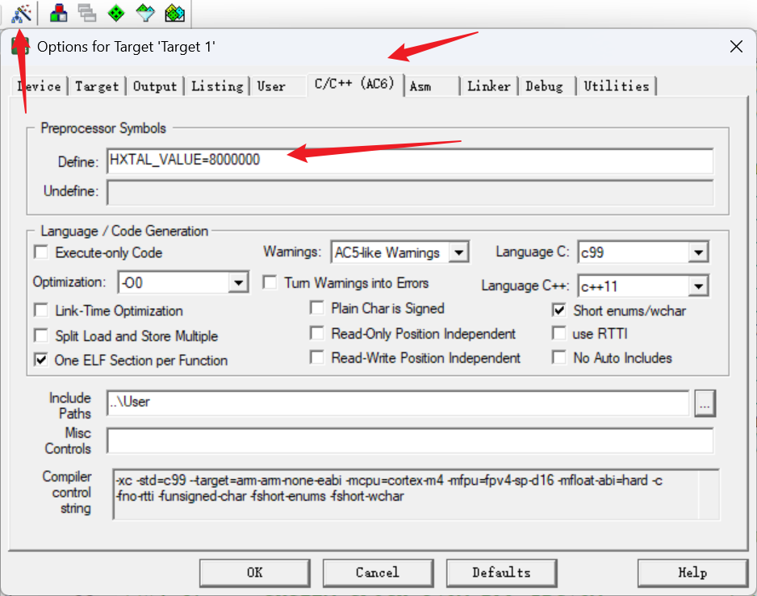

<!DOCTYPE lake>
<h2 data-lake-id="gJJiw" id="gJJiw"><span data-lake-id="uc389dbcb" id="uc389dbcb">学习目标</span></h2><ul list="u319f435a"><li data-lake-id="ua9df63d1" fid="u272bfc28" id="ua9df63d1"><span data-lake-id="uf6b34672" id="uf6b34672">掌握如何在 Keil 中搭建 RTE 开发环境</span></li><li data-lake-id="ua1e38a17" fid="u272bfc28" id="ua1e38a17"><span data-lake-id="ube169d66" id="ube169d66">掌握如何在 RTE 环境中添加外设库</span></li><li data-lake-id="u14927973" fid="u272bfc28" id="u14927973"><span data-lake-id="u37e1e099" id="u37e1e099">掌握如何在 RTE 环境中选择软件库版本</span></li><li data-lake-id="u19ecab97" fid="u272bfc28" id="u19ecab97"><span data-lake-id="uc46bd2ac" id="uc46bd2ac">掌握如何在 RTE 环境中安装软件库</span></li></ul><h2 data-lake-id="sh7gU" id="sh7gU"><span data-lake-id="u789091ec" id="u789091ec">学习内容</span></h2><h3 data-lake-id="qGshG" id="qGshG"><span data-lake-id="u2612f018" id="u2612f018">RTE 环境基础</span></h3><p data-lake-id="u6e22e5dd" id="u6e22e5dd"><span data-lake-id="u22fc274f" id="u22fc274f">RTE 是 Keil 提供的一个运行时环境管理工具，全称为</span><strong><span data-lake-id="u62ea1ede" id="u62ea1ede">Run-Time Environment</span></strong><span data-lake-id="uec9080c7" id="uec9080c7">，用于简化外设库的管理和配置，还可以添加其他类型的软件库，如LVGL，FreeRTOS等。</span></p><p data-lake-id="u9a0a28d2" id="u9a0a28d2"><br/></p><h4 data-lake-id="nTpPm" id="nTpPm"><span data-lake-id="u9fae61c4" id="u9fae61c4">软件库功能管理</span></h4><p data-lake-id="uf2bbc620" id="uf2bbc620"></p><p data-lake-id="u526ad65f" id="u526ad65f"><span data-lake-id="uba377ee3" id="uba377ee3">通过 绿色小图标 进入 软件库添加 操作界面</span></p><h4 data-lake-id="SKVGA" id="SKVGA"><span data-lake-id="ucfaea85c" id="ucfaea85c">软件库版本版本选择</span></h4><p data-lake-id="uf27ec9a4" id="uf27ec9a4"></p><p data-lake-id="ud24ec7a8" id="ud24ec7a8"><span data-lake-id="u17cfcb78" id="u17cfcb78">点击 白色小图标进入 软件库版本管理界面，默认是自动选择好了最新版本。</span></p><p data-lake-id="uda4c4f4a" id="uda4c4f4a"></p><p data-lake-id="u4abf9650" id="u4abf9650"><span data-lake-id="udc18e0cb" id="udc18e0cb">可以通过去掉 勾选，选择不同版本的软件。</span></p><ul list="u16170a36"><li data-lake-id="uc81d95d3" fid="u79ddb9a2" id="uc81d95d3"><span data-lake-id="u4dd3da49" id="u4dd3da49">excluded 表示不添加这个软件库到项目中</span></li><li data-lake-id="ud167d172" fid="u79ddb9a2" id="ud167d172"><span data-lake-id="ue618ddcd" id="ue618ddcd">latest 表示添加这个软件库到项目中，且是最新最近版本</span></li><li data-lake-id="u2061763b" fid="u79ddb9a2" id="u2061763b"><span data-lake-id="uccfc1ac0" id="uccfc1ac0">fixed 表示添加这个软件库到项目中，使用的是自定义版本</span></li></ul><h4 data-lake-id="RT4qA" id="RT4qA"><span data-lake-id="u1203356a" id="u1203356a">软件库下载</span></h4><p data-lake-id="ude1b0ef0" id="ude1b0ef0"></p><p data-lake-id="ube4c3844" id="ube4c3844"><span data-lake-id="u618a2c36" id="u618a2c36">通过点击Pack Installer 按键，进入Pack界面，下载自己所需的软件和需要的版本。</span></p><p data-lake-id="u44048caa" id="u44048caa"><span data-lake-id="u4ca17286" id="u4ca17286">​</span><br/></p><h3 data-lake-id="c8psQ" id="c8psQ"><span data-lake-id="uba9e047d" id="uba9e047d">RTE环境搭建</span></h3><h4 data-lake-id="bZg1b" data-lake-index-type="2" id="bZg1b"><span data-lake-id="ub5488149" id="ub5488149">选择基本环境</span></h4><p data-lake-id="uca0e4f06" id="uca0e4f06"></p><p data-lake-id="u8e966cb4" id="u8e966cb4"><span data-lake-id="ucc058ac8" id="ucc058ac8">CMSIS环境添加，无需再去配置 include path。</span></p><p data-lake-id="ue4b572fc" id="ue4b572fc"><span data-lake-id="uab2074d4" id="uab2074d4">Startup环境添加，汇编启动代码添加完成。</span></p><h4 data-lake-id="qymD8" data-lake-index-type="2" id="qymD8"><span data-lake-id="uf61de31f" id="uf61de31f">添加外设依赖库</span></h4><p data-lake-id="u49e5ad60" id="u49e5ad60"></p><p data-lake-id="u303251b0" id="u303251b0"><span data-lake-id="u321b63a4" id="u321b63a4">按需选择 外设库</span></p><h4 data-lake-id="GlJ8Y" data-lake-index-type="2" id="GlJ8Y"><span data-lake-id="u5a10d097" id="u5a10d097">主频配置</span></h4><p data-lake-id="ua2503c8f" id="ua2503c8f"></p><p data-lake-id="ua8c7ed25" id="ua8c7ed25"></p><span class="yuque-card-unsupported">[codeblock]</span><p data-lake-id="ua0b7f772" id="ua0b7f772"></p><p data-lake-id="uef4014b8" id="uef4014b8"><span data-lake-id="uadfec998" id="uadfec998">​</span><br/></p><h2 data-lake-id="TrzyF" id="TrzyF"><span data-lake-id="udcf4c90c" id="udcf4c90c">练习题</span></h2><ol list="u51e60e4a"><li data-lake-id="u74e4da50" fid="u0a334dd8" id="u74e4da50"><span data-lake-id="ub79b1d84" id="ub79b1d84">使用 RTE 环境实现一个简单的点灯程序</span></li></ol>